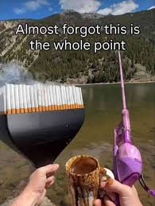

Bem vindo!

Este é um parágrafo
Este talvez seja um parágrafo em negrito
Este é um parágrafo que certamente não está em negrito, mas sim em itálico
Como preparar um café delicioso
Itens necessários:
- Café em grãos ou moídos
- Água filtrada
- Chaleira ou cafeteira
- Filtro de papel (se necessário)
- Xícara
- Açúcar ou adoçante (opcional)
Passos para preparar o café:
- Escolha seu café de qualidade
- Moer os grãos (se ainda não estiverem moídos)
- Aqueça a água até próximo o ponto de fervura
- Prepare o filtro, se estiver usando
- Coloque o café moído no filtro
- Despeje a água quente lentamente
- Aguarde a extração
- Sirva e aproveite!
Bom café é arte e ciência.
| Nome | |
Idade | |
Cidade | |
Profissão |
| João Silva | |
35 | |
São Paulo | |
Engenheiro |
| Maria Santos | |
28 | |
Rio de Janeiro | |
Designer |
| Pedro Oliveira | |
42 | |
Belo Horizonte | |
Professor |
| Ana Costa | |
31 | |
Curitiba | |
Advogada |
| Lucas Souza | |
45 | |
Porto Alegre | |
Médico |